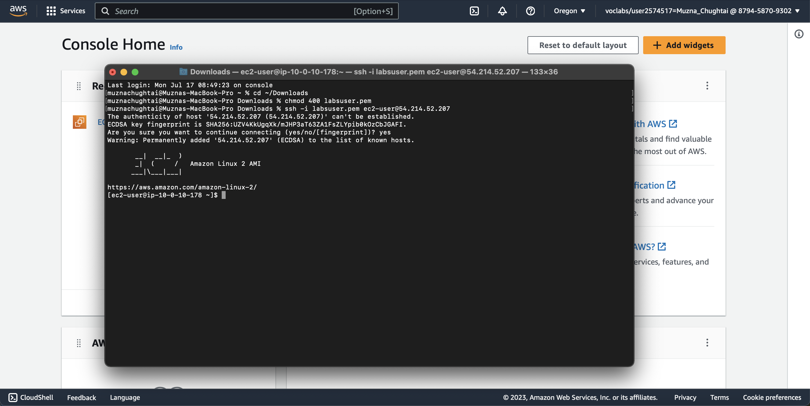
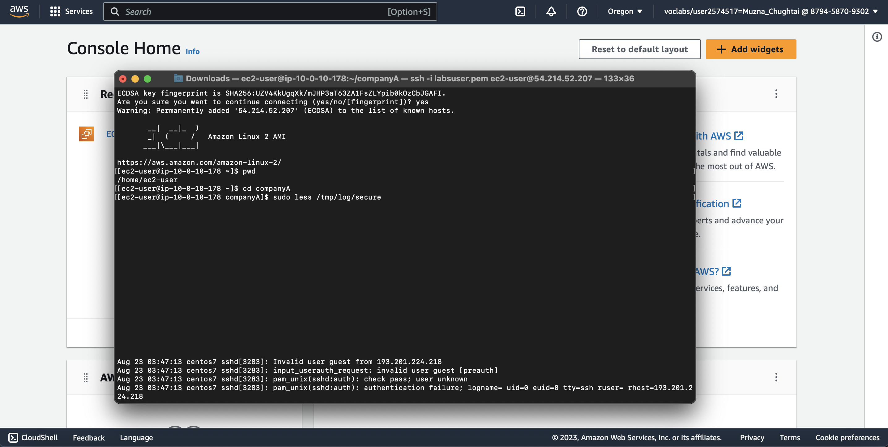
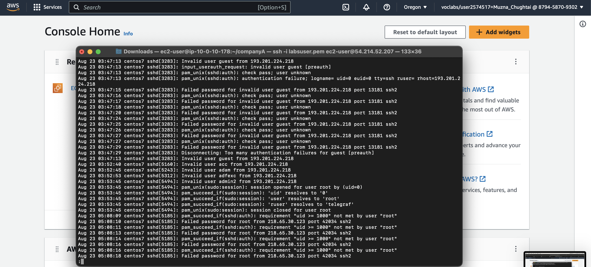
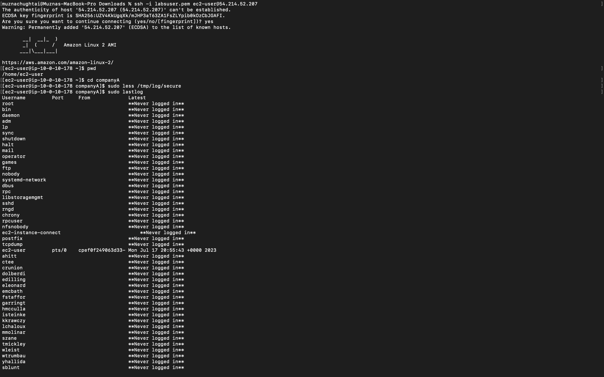

Managing Log Files
Task 1: Use SSH to connect to an Amazon Linux EC2 instance
Firstly, we use SSH to connect to an Amazon Linux EC2 instance. For connectio we follow following steps:
- We download the pem file. Open a terminal window, and change directory cd to the directory where the pem file was downloaded. to do that we run following command:
cd ~/Downloads
- Change the permissions on the key to be read-only, by running this command:
chmod 400 labsuser.pem
- Then we return to the EC2 Console and select Instances. Check the box next to the instance you want to connect to and in the Description tab copy the IPv4 Public IP value to run following command:
ssh -i labsuser.pem ec2-user@54.214.52.207
- Type yes when prompted to allow the first connection to this remote SSH server 
Task 2: Review secure log files
In this task, we use common Linux tools to review the secure log files and use the lastlog Linux application to review the previous logins.
- To validate that you are in the companyA home folder, enter pwd
- To use the secure log file as a test, enter
sudo less /tmp/log/secure

- To exit the program, enter
:q

- To view the last login times of all the users on the machine, enter
sudo lastlog
